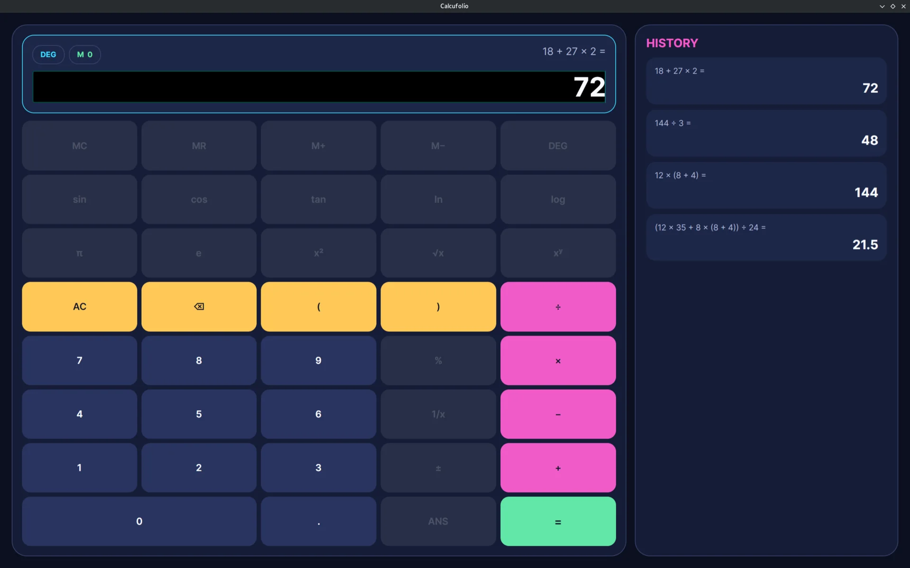

← Retour aux projets
Calculatrice desktop à moteur d’expressions · En cours
Calcufolio
Calculatrice desktop C#/.NET 10 avec Avalonia, moteur d’expressions tokenisé et parsé, MVVM, tests automatisés et CI GitHub Actions.
